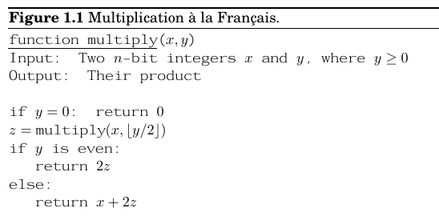
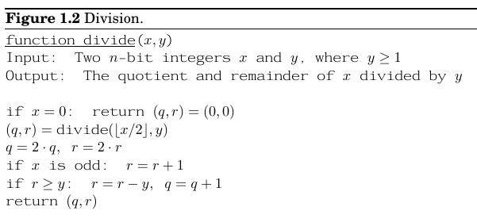
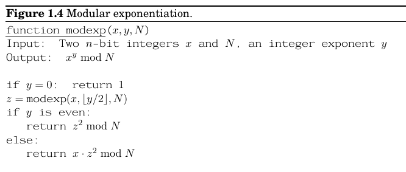
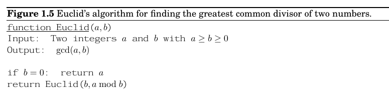
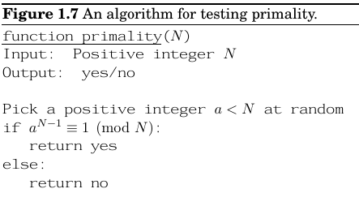
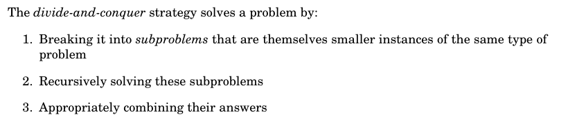
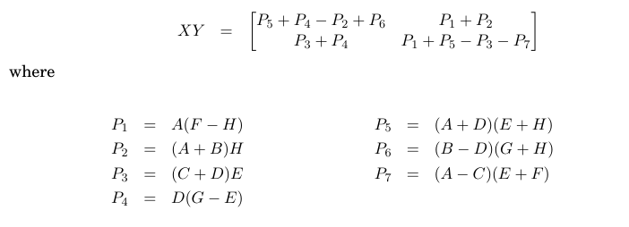

常见算法
约 1426 个字 预计阅读时间 5 分钟
Abstract
算法是一种很宽泛的东西，感觉结合实际问题去理解比较好。本篇参考了UCB-CS170，这门课的Latex文档确实排的很好看。
Algorithms with numbers
Basic Arithmetic
Note
这里我们都是按二进制串在讨论，原因有两个： * 首先实际当中的数据可能会很大，会占用多个byte
- 其次底层硬件计算的逻辑是二进制
-
Addition:$O(\log(n)) $
-
Multiplication:$\log(n^2) $，乘法有一种算法,乘除2其实相当于左移右移 
Modular Arithmetic
-
Division 
-
Modular Exponentiation 
-
Euclid Algorithm 
-
Bézout's lemma

-
Primarity 
BackTracking
这是一种很基础的算法，本质上是走不通就回头，在DFS和BFS常用。基本思路是遍历所有的可能情况，在验证过程中要注意合理地剪枝(pruning)。
Divide and Conquer

Basic Examples
都是fds里面学过的： * 最大子序列和 * 二分查找 * 树的遍历 * 归并排序和快速排序
Master Theorem
Difinition
主定理（Master Theorem）是算法分析中的一个重要工具，特别适用于解决在分治算法中常见的递归关系。主定理为以下形式的递归方程提供了一个简便的时间复杂度计算方法：
其中： - \( a \geq 1 \) 表示子问题的数量， - \( b > 1 \) 是问题规模被划分的比例， - \( f(n) \) 是除递归部分外的开销函数。
主定理适用于 \( f(n) \) 是渐近多项式的情况，它可以帮助我们确定递归部分和非递归部分中哪一个对算法的时间复杂度影响最大。主定理根据 \( f(n) \) 和 \( n^{\log_b a} \) 的比较，将递归分成三种情况。
Three Cases
- 情况 1（递归部分占主导）：
- 如果 \( f(n) = O\left(n^c\right) \)，且 \( c < \log_b a \)，
-
那么 \( T(n) = \Theta\left(n^{\log_b a}\right) \)。
-
情况 2（递归与非递归部分平衡）：
- 如果 \( f(n) = \Theta\left(n^{\log_b a}\right) \)，
-
那么 \( T(n) = \Theta\left(n^{\log_b a} \log n\right) \)。
-
情况 3（非递归部分占主导）：
- 如果 \( f(n) = \Omega\left(n^c\right) \)，且 \( c > \log_b a \)，并且满足 \( a f\left(\frac{n}{b}\right) \leq k f(n) \)（其中 \( k < 1 \) 是常数），
- 那么 \( T(n) = \Theta\left(f(n)\right) \)。
Example
考虑以下递归式：
在这里，\( a = 2 \)，\( b = 2 \)，\( f(n) = n^2 \)。
- 计算 \( \log_b a = \log_2 2 = 1 \)。
- 比较 \( f(n) = n^2 \) 与 \( n^{\log_b a} = n^1 \)。
由于 \( f(n) = n^2 \) 的增长速度比 \( n^1 \) 快，所以这属于情况 3。因此，递归的解为：
这就是如何通过主定理来确定递归方程的时间复杂度的过程。
Other Examples
Matrix Multiplication
常规的矩阵（以方阵为例）乘法朴素实现的时间复杂度是\(O(\log(n^3)) \(，确实效率很低下，这里按照分治的思路提供一种优化，对矩阵进行分块，但是需要技巧，如果我们仅仅是常规地分块后直接相乘是无法优化效率的\)\)X=\begin{bmatrix} A&B\C&D \end{bmatrix}, Y=\begin{bmatrix} E&F\G&H \end{bmatrix} $$ 我们会得到以下递推$$T(n)=8T(n/2)+O(n^2) $$根据主定理的第一种情况，递归占主导，时间复杂度还是三次方。
但是Strassen 找到了一种优化解法 
得到递推$$T(n)=7T(n/2)+O(n^2) $\(依旧是主定理第一种情况，算出来时间复杂度是\)O(n^{\log_27}\approx O(n^{2.81})) \(，虽然看起来下降的不多，但事实是\)\approx 646 $，比1000小了不少}^{2.81
Closest Pair of Points Problem
给定平面上的 \(n\) 个点，找到距离最小的两个点，并返回它们之间的距离。
最简单的解法是使用 暴力算法。也就是计算每一对点之间的距离，然后找到距离最小的那一对。时间复杂度为 \(O(n^2)\)，因为需要检查每对点的组合。
为了提高效率，可以采用 分治算法，该算法的时间复杂度为 \(O(n \log n)\)。
-
按横坐标排序：首先将所有点按横坐标排序，时间复杂度为 \(O(n \log n)\)。
-
递归求解：将点集分成左右两部分，对每一部分递归调用该算法，找出左右两部分的最近点对，分别记为 \( \delta_L \) 和 \( \delta_R \)。
-
跨中线的检查：找到中线附近的点，检查跨越左右两部分的最近点对。此时只需考虑距离中线小于 \( \delta = \min(\delta_L, \delta_R) \) 的点，按纵坐标排序后，在这些点中最多需要检查 \(O(6)\) 对点。
$$O(n)=2T(n/2)+O(n) $$ 符合主定理的第二条，计算出时间复杂度为$O(n\log n) $
Dynamic Programming
Definition
动态规划（Dynamic Programming, DP）常用于解决具有重叠子问题和最优子结构性质的问题。动态规划通过将问题分解为更小的子问题，逐步构建解决方案，避免了重复计算子问题的结果，从而提高了算法的效率。简而言之就是消耗空间存储已计算出的结果，避免重复运算从而节约时间。
Examples
Longest Common Substring(LCS)
Longest Increasing Subsequences(LIS)
Floyd-Warshall Algorithm
Greedy
Difinition
每个阶段都选当前最优，从而希望得到全局最优，易于实现，但是未必能得到想要的结果，贪心算法的实现通常相对同一问题的其他解法来说比较简单。
Basic Examples
- 排课表
- 最短路径算法
- MST，两个最小生成树算法都是
NP Completeness
根据问题的难度，由不同的定义划分，问题可以分为： P问题(polynomial time)，NP问题(nondeterministic polynomial time)，NPC问题(NP completence)，NPH问题(NP hard)。除此以外还有不可计算问题(undecidable)
P
多项式时间内可解决的问题
NP
多项式时间内可以验证的问题
NPC
NP完全是NP中最难的决定性问题